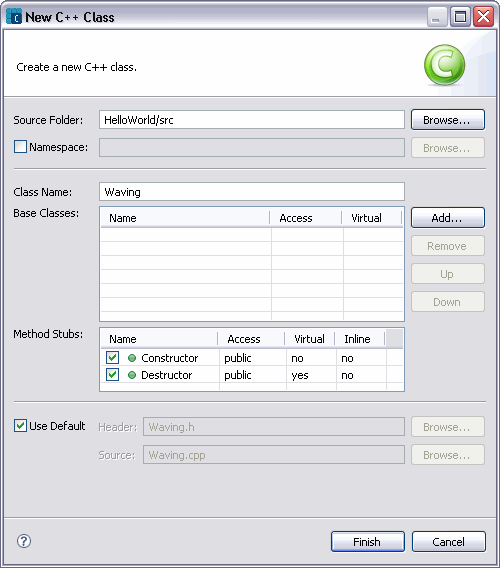

To add a new C++ class
-
Click File > New > Class from the menu bar, or select New > Class from the project′s pop-up menu where you want the new class to reside.
The New C++ Class wizard appears.
-
Specify the folder where the class should be created by typing the Source Folder name or by clicking Browse and selecting the source folder.

-
Select the Namespace checkbox, if you want to add the class to a namespace. Click Browse to select an existing namespace, or type the name of the new namespace.
-
In the Class Name field, type the name of the class.
-
Click Add to choose the Base Classes from which the class has to be derived

To select a base type you are looking for, do the following:
- Type the search string to locate the class, struct and other low-level types you are looking for
- Select a Visible Type to narrow your search.
For example, if you are for looking for only classes then select the Class checkbox, etc. The Matching Types lists all the types matching the visible type and search string. The Qualifier lists the header file which contain the type declaration of all the type listed.
- Click Add to add the selected type to the Base Classes list.
By default, the types are added with Public access and without Virtual inheritance, although these settings can be changed.
- Click OK when you have completed adding base classes, or click Cancel to cancel the action.
- Once the Base Classes are added, you can click Remove to remove a selected class from the list. You can also click Up and Down after selecting a class from the list to change the order in which the base classes are inherited.
Select the Method Stubs you want the wizard to generate by selecting the appropriate checkbox. By default, both Constructor and Destructor are selected. By default, the constructor is added with public access, and as non-virtual and non-inline, and the destructor is added as public, virtual, and not inline.
Select the Use Default checkbox to create the C++ class in new header and source files with default names. Otherwise, deselect the Use Default checkbox, and enter the Header and Source file names. Click Browse to select the Header and Source files, if you want to add the class declaration and definition to existing files.
- Click Finish to create a C++ class according to the specification, or click Cancel to cancel the task.